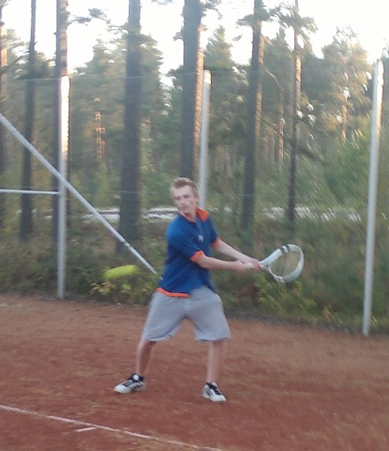
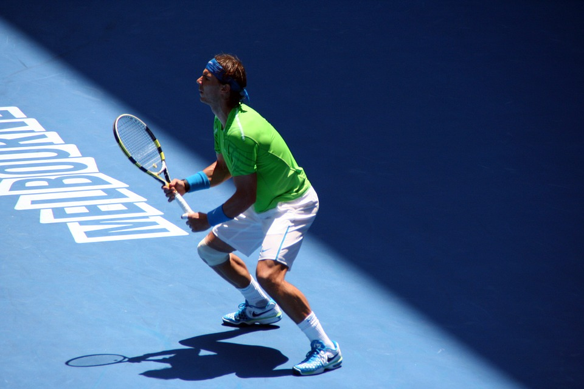

Aloitin tenniksen pelaamisen jo 9-vuotiaana isäni kannustamana. Ensimmäinen tennismailani oli merkiltään Wilson ja se maksoi 30mk. Aluksi tenniksen pelaaminen oli todella haastavaa, mutta vähitellen totuin käsittelemään mailaa ja sen pelaamisesta alkoi nauttimaan yhä enemmän. Jo parin vuoden kuluttua ensimmäisistä lyönneistäni pelaaminen koukutti jo niin paljon, että siitä tuli itselleni säännöllinen harrastus. Olen perheeni kolmesta lapsesta selvästi nuorin ja pienempänä olin yleensä sisaruksiani huonompi peleissä, mutta tenniksessä onnistuin välillä voittamaan heidät. Tämä kasvatti motivaatiotani harjoitella entistä enemmän kun huomasin, että kärsivällisellä harjoittelulla saa tuloksia.

Nuorempana harjoittelin paljon kahdenkäden rystylyöntiä (Kesä 2007).
Tenniksen pelaaminen on jatkunut lähes tauoitta tähän päivään asti. Nykyään pelaan tennistä noin 3 kertaa viikossa, riippuen vuodenajasta. Kesällä tennistä tulee pelattua paljon enemmän kuin talvisin. Ulkona auringon paisteisella massakentällä pelaaminen on suuri nautinto. Talvella pelaaminen tapahtuu sisällä hallissa, jossa on kovempi alusta. Itse olen aina ollut enemmän kiintynyt massakenttään.
Olen aika nopea reagoimaan ja liikkumaan kentällä. Pelissä vahvuuteni on lyöntien tarkkuus, erityisesti kahden käden rystylyönnin. Yläkierteiseen kämmenlyöntiin saan hyvin kierrettä ja ihan riittävästi kovuutta.
Syötön kovuus, tarvitsisin etenkin kovemman ykkössyötön. Huonon syötön takia en pärjää läheskään niin hyvin kovalla alustalla, kuin massakentällä. Pysäytyslyöntiä täytyisi harjoitella vielä lisää, jotta pelistäni tulisi arvaamattomampaa.
Olen oppinut tenniksen avulla olemaan kärsivällinen. Malttia ei ikinä kannata menettää epäonnistumisten myötä eikä luovuttaminen ikinä kannata. Voittaminen ei ole minulle tärkeintä, vaan oman edistyksen seuraaminen ja sosiaalisuus.
Suosikkipelaajani on espanjalainen Rafael Nadal. Häntä pidetään kaikkien aikojen parhaana massakentän pelaajana. Nadal on voittanut Roland Garros -massaturnauksen ennätykselliset 13-kertaa. Hänellä on turnauksista kertynyt yhteensä 100 voittoa ja vain 2 tappiota. Nuorempana ihailin ja kopioin etenkin hänen tyyliään lyödä yläkierteinen kämmenlyönti. Lyön edelleen samalla tyylillä, jonka harjoittelin ”Rafan” inspiroimana.

Rafael Nadal Australian Avoimissa. (Pixabay.com)